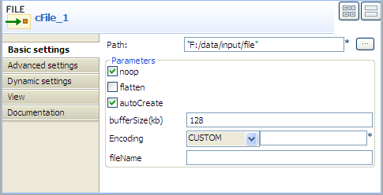
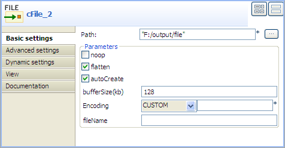

|
Famille de composant |
Messaging | |
|
Fonction |
Le composant cFile offre un accès aux systèmes de fichiers. | |
|
Objectif |
Le cFile permet de faire traiter des fichiers par d'autres composants Camel ou de sauvegarder sur le disque des messages d'autres composants. | |
|
Basic settings |
Path |
Chemin d'accès au(x) fichier(s) au(x)quel(s) accéder ou à sauvegarder. |
|
|
Parameters/Noop |
Cochez cette case afin de laisser le(s) fichier(s) dans le dossier original après lecture. |
|
|
Parameters/Flatten |
Cochez cette case pour supprimer le nom des sous-répertoires dans le chemin d'accès au fichier. Cela vous permet de consommer de manière récursive dans les sous-répertoires, mais quand vous écrivez, par exemple, les fichiers dans un autre répertoire, ils seront écrits dans un seul répertoire. |
|
|
Parameters/AutoCreate | Cochez cette case pour créer automatiquement le répertoire spécifié dans le champ Path s'il n'existe pas. |
|
|
Parameters/BufferSize(kb) |
Saisissez la taille de la mémoire tampon, en kilooctets. |
| Encoding | Sélectionnez l'encodage du fichier, ISO-8859-15, UTF-8, ou CUSTOM. | |
| FileName | Nom du fichier à traiter. Utilisez cette option si vous souhaitez consommer uniquement un fichier dans le répertoire spécifié. | |
| Advanced settings | Advanced | Configurez les arguments facultatifs dans la table correspondante. Cliquez sur le bouton [+] autant de fois que nécessaire pour ajouter des arguments à la table. Cliquez ensuite sur le champ Value correspondant pour saisir une valeur. Consultez le site http://camel.apache.org/file2.html (en anglais) pour voir les options d'URI disponibles. |
|
Utilisation |
Le composant cFile peut être un composant de début, un composant intermédiaire ou un composant de fin dans une Route. | |
|
Limitation |
n/a | |
Dans ce scénario, un composant d'entrée cFile est configuré pour parcourir un répertoire de fichiers locaux et envoyer les fichiers dans un composant cFile de sortie qui écrit ces fichiers dans un autre répertoire.
Dans la Palette, développez le dossier Messaging et sélectionnez le composant cFile. Déposez-en un comme composant d'entrée et un comme composant de sortie, dans l'espace de modélisation graphique.
Cliquez-droit sur le composant d'entrée cFile, sélectionnez Row > Route dans le menu contextuel et cliquez sur le composant de sortie cFile.
Nommez les composants afin de mieux identifier leur fonctionnalité.
Double-cliquez sur le composant d'entrée cFile pour afficher sa vue Basic settings.
Dans le champ Path, parcourez votre système ou saisissez le chemin d'accès au fichier d'entrée et laissez les autres champs tels qu'ils sont.
Double-cliquez sur le composant de sortie cFile pour afficher sa vue Basic settings.
 Dans le champ Path, parcourez votre système ou saisissez le chemin d'accès au fichier de sortie, comme dans la capture d'écran ci-dessus. Laissez les autres paramètres tels qu'ils sont.
Appuyez sur Ctrl+S pour sauvegarder votre route.
Cliquez sur l'onglet Code au bas de l'espace de modélisation graphique pour visualiser le code généré.

Comme affiché dans le code, une route de message est construite d'un (
from) endpoint vers (.to) un autre.Cliquez sur la vue Run pour l'afficher et cliquez sur le bouton Run pour lancer l'exécution de votre Route. Vous pouvez également appuyer sur F6 pour l'exécuter.
Résultat : Les fichiers d'entrée sont écrits dans le répertoire de sortie spécifié.